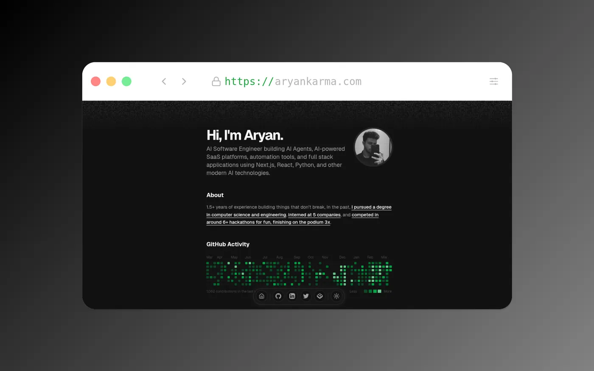
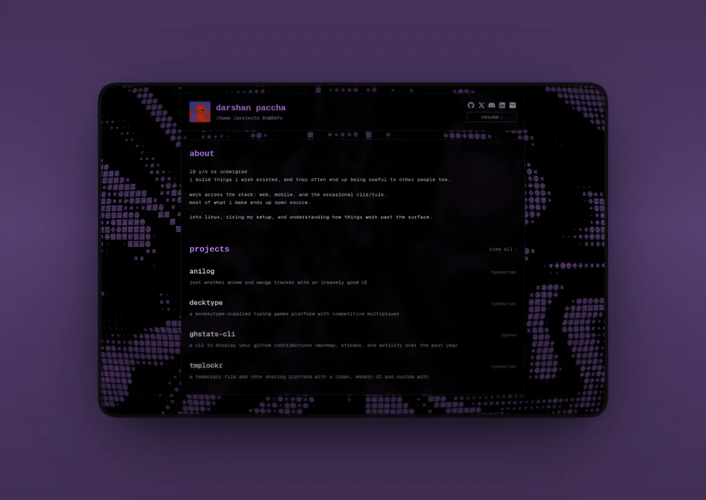
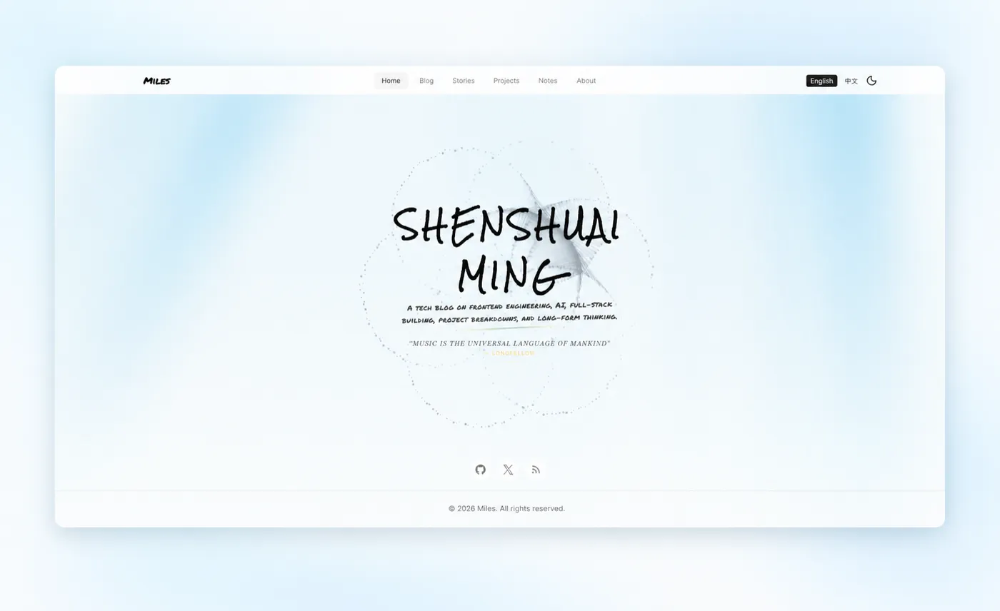
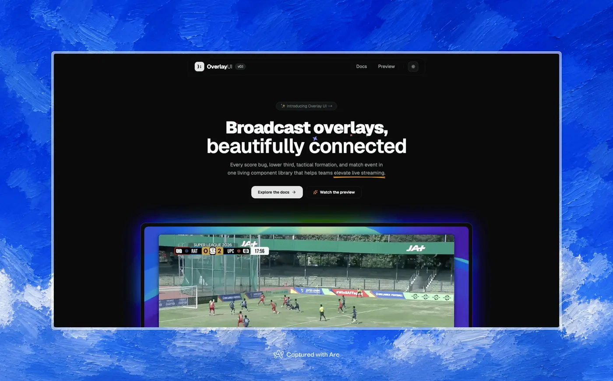
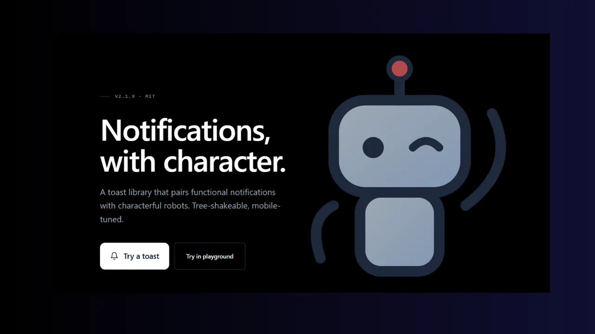

登錄檔裡已有名字的動效
Marquee 讓文字、圖片或影片無限捲動。Blur Fade 讓內容淡入淡出。Border Beam 讓一道光沿容器邊緣移動。Shimmer Button 讓光沿著按鈕周圍走。
設計工程師
給同時做設計與實作的人。把 React 動效元件，透過 shadcn registry 加進已使用 Tailwind 的專案。原始碼以 MIT 授權釋出。
MIT 授權 · 75 個 registry:ui 元件
結果
Magic UI 是給設計工程師的介面元件庫。元件給已使用 Tailwind CSS 的 React 與 Next.js 專案，並透過 shadcn registry 加入。
Marquee 讓文字、圖片或影片無限捲動。Blur Fade 讓內容淡入淡出。Border Beam 讓一道光沿容器邊緣移動。Shimmer Button 讓光沿著按鈕周圍走。
先初始化一次 shadcn，再加入任一 @magicui slug。原始碼會放進 components/magicui，由你擁有、可自行修改。若你的 import alias 不是 @/components/ui，請自行調整路徑。
magicui.design/docs 的文件涵蓋安裝、每個元件，以及給 AI IDE 工作流程的 MCP 設定。
新增元件或效果大約要寫 5 個檔案，再加上 pnpm build:registry 產生的產物，大約花 5 到 10 分鐘。
75 個 slug 中顯示 75 個
沒有符合的 slug。清除篩選可看到全部元件。
magic-cardandroidwarp-backgroundline-shadow-textaurora-textmorphing-textscroll-progresslenspointersmooth-cursorprogressive-blurneon-gradient-cardmeteorsgrid-patternstriped-patterninteractive-grid-patterndot-patternflickering-gridhero-video-dialogcode-comparisonscript-copy-btnmarqueeglyph-matrixglobeshimmer-buttontweet-cardclient-tweet-cardbento-gridparticlesnumber-tickerrippleretro-gridanimated-listanimated-shiny-textanimated-grid-patternborder-beamanimated-beamtext-revealhyper-textanimated-gradient-textorbiting-circlesdockword-rotateavatar-circlestyping-animationsparkles-textspinning-textflip-textcomic-texticon-cloudtext-animatescroll-based-velocityscratch-to-revealshiny-buttonbox-revealshine-borderanimated-circular-progress-barconfettianimated-subscribe-buttoncool-modepulsating-buttonripple-buttonfile-treeblur-fadesafariiphone-15-prorainbow-buttoninteractive-hover-buttonterminalvideo-textpixel-imagehighlighterarc-timelineanimated-theme-togglergrid-beams把動效留在介面上。 把元件原始碼留在你的專案裡。
使用方式
01
Magic UI 需要使用 Tailwind CSS 的 React 或 Next.js 專案。在該專案執行一次 init。
02
用 registry add 指令加上 @magicui 與 slug，例如 magic-card。部分元件會列出自己的相依套件，例如 Globe 需要 cobe 與 motion，並自帶 keyframes。
03
保留元件 API，優先用 props 與 className，不要先改產生出來的內部實作。結束前檢查鍵盤操作、窄螢幕是否溢出，以及同一個視窗是否疊了太多高強度動效。
作品截圖
Magic UI 作品展示中的精選。





問題
Magic UI 是給設計工程師的介面元件庫，提供給使用 Tailwind CSS 的 React 與 Next.js 專案的元件。官方網站是 https://magicui.design。
先執行一次 npx shadcn@latest init，再執行 npx shadcn@latest add @magicui/ 加上 slug，例如 @magicui/magic-card。原始碼會複製到 components/magicui。若你的 alias 不是 @/components/ui，請調整 import 路徑。
Magic UI 以 MIT 授權釋出，著作權人為 Magic UI。複本必須保留著作權聲明與許可聲明。
Fork 倉庫、clone 你的 fork、執行 pnpm i、建立 .env.local 並寫入 NEXT_PUBLIC_APP_URL=http://localhost:3000，然後執行 pnpm dev。需要 Node 22.14.0 以上與 pnpm 9 以上。
check 指令會跑 lint、型別檢查、格式檢查與 registry 相依檢查。registry 檔案或 config/site.ts 有變動時請執行 pnpm build:registry，也請執行 pnpm build，因為 CI 也會跑它。Commit 訊息遵循 Conventional Commits。
請看 https://magicui.design/docs。元件頁在 https://magicui.design/docs/components，安裝頁在 https://magicui.design/docs/installation，MCP 設定在 https://magicui.design/docs/mcp。
可以加入 Discord：http://magicui.design/discord（邀請連結 https://discord.com/invite/87p2vpsat5），或追蹤 https://twitter.com/magicuidesign。回報問題或提出想法請開 GitHub issue。可參考的 pull request 範例是 https://github.com/magicuidesign/magicui/pull/780。
可以。元件是為使用 Tailwind CSS 的 React 與 Next.js 專案寫的。先在你的專案執行 shadcn init，再加入需要的元件。
如果 components.json 或 registry init 失敗，請先執行 shadcn init；對齊你專案的 import alias；文件要求時加入全域 CSS keyframes；並安裝該元件列出的相依套件。例如 Globe 需要 cobe 與 motion。
可以。MIT 授權允許你使用、複製、修改、合併、公開發表、散佈、再授權與販售複本，但必須保留著作權聲明與許可聲明。